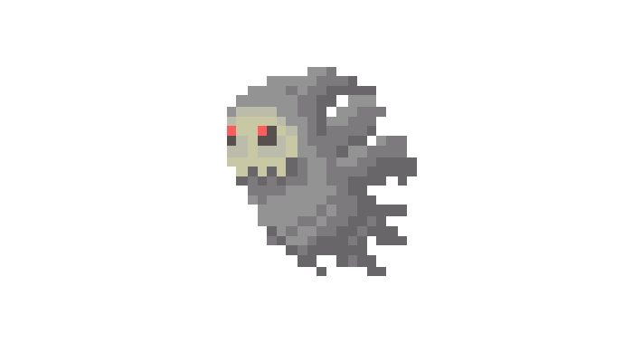
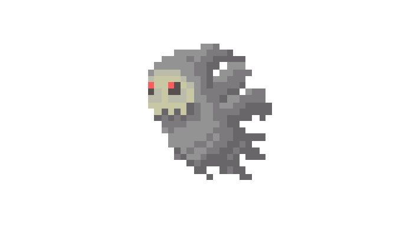

You and your fellow groups of adventures walked down a trailed until yall heard someone scream. You ran ahead to see what was happening! Whenver you arrive at the scene there was dark spirits that was attacking a group of merchants. Your group finally caught up with you and asked what should we do? In your mind you have two choice either you:
 
